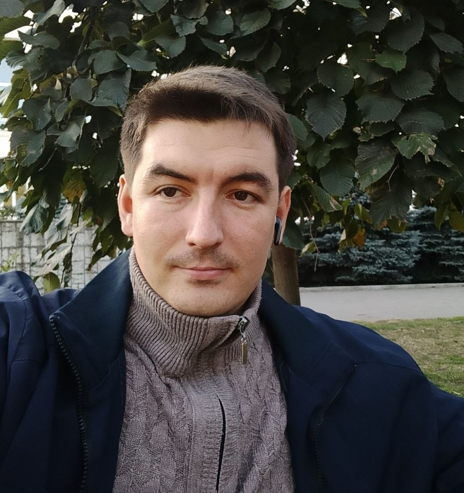

Сергій Александровський
Ця сторінка - вікно у мій світ, де ви зможете дізнатися про мої захоплення, мрії та важливі моменти з життя.
|
Рік |
Подія |
|
2000 |
Народження - початок захоплюючої подорожі життя. |
|
2018 |
Закінчення школи - відкриття світу знань та відкритів. |
|
2018 |
Вступ до Бакалаврату - початок важкої работи. |
|
2022 |
Вступ до Магістратури - початок ще важчої работи. |
|
2024 |
Вступ до ШАГу - перший крок у програмуванні. |

Захоплення
Програмування - це не просто хобі, а справжня пристрасть, яке наповнює моє життя змістом. Я вважаю, що коди - це сучасна поезія, а кожен рядок коду - це моя можливість створити щось нове та унікальне. Крім того, я обожнюю читати книги, які відкривають мені нові світи, і мандрувати, досліджуючи різні культури. Ці подорожі надихають мене на нові ідеї та дають змогу зустрічати цікавих людей
Саме в розробці веб-сайтів я знайшов ідеальний спосіб поєднати свою творчість із технічною майстерністю. Для мене створення сайту — це набагато більше ніж просто написання коду на HTML, CSS та JavaScript. Це мистецтво будувати цілі всесвіти, де кожен елемент інтерфейсу, від найменшої кнопки до складної анімації, працює на одну мету: створити для користувача зручний, естетичний та незабутній досвід. Я відчуваю щирий захват, коли бачу, як статичний макет перетворюється на інтерактивний, живий продукт, яким можна взаємодіяти.
Крім того, мене захоплює нові эмоції , створення надійних серверних додатків, проектування баз даних та написання чистих і ефективних алгоритмів. Я постійно вдосконалюю свої навички, вивчаючи такі технології, як Python, розуміючи, що в світі програмування зупинятися неможливо. Для мене кожен новий проект — це виклик, можливість вирішити унікальне завдання та подарувати користувачам інструмент або розвагу, якої раніше у них не було.
Усі права захищені, "© 2025 Сергій Александровський")